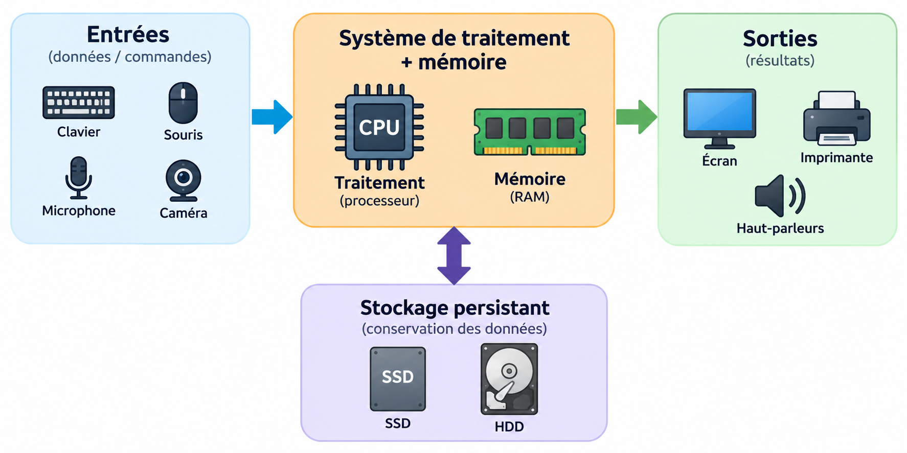

Architecture d’un ordinateur
Comprendre l’organisation d’un système informatique, les interactions entre ses couches matérielles et logicielles, ainsi que le cheminement de l’information lors de l’exécution d’une tâche.
1. Définition de l’architecture d’un ordinateur
Définition
L’architecture d’un ordinateur désigne l’organisation fonctionnelle d’un système informatique : les éléments qui le composent, leurs rôles, leurs relations et les mécanismes qui permettent l’exécution des instructions et la circulation des données.
Étudier une architecture ne consiste pas à mémoriser une liste de composants. Il s’agit d’identifier les grandes unités du système, leur fonction et leur place dans l’ensemble. Cette représentation sert de modèle pour comprendre le fonctionnement d’une machine avant d’en étudier les composants en détail.
Exemple
Un ordinateur portable et un ordinateur de bureau peuvent utiliser des composants physiques différents tout en reposant sur la même logique architecturale : recevoir des informations, les traiter, les conserver et produire des résultats.
2. Architecture matérielle et architecture logicielle
Définition
L’architecture matérielle concerne l’organisation des ressources physiques de la machine. L’architecture logicielle concerne l’organisation des programmes et des couches logicielles qui exploitent ces ressources.
Le matériel correspond à ce qui constitue physiquement la machine; le logiciel correspond aux instructions exécutées par cette machine. Cette distinction permet de déterminer si un élément appartient à l’infrastructure physique ou à l’environnement logiciel.
| Dimension | Question principale | Exemples |
|---|---|---|
| Matérielle | Quelles ressources physiques réalisent les opérations ? | CPU, mémoire, stockage, contrôleurs, périphériques |
| Logicielle | Quelles couches donnent des instructions et organisent l’utilisation des ressources ? | Système d’exploitation, pilotes, bibliothèques, applications |
Exemple
Une barrette de RAM et un SSD sont des éléments matériels. Windows, un navigateur Web et un pilote sont des éléments logiciels. Cette classification ne décrit pas encore leurs interactions; celles-ci seront étudiées dans la section 6.
3. Les quatre fonctions : entrée, traitement, stockage et sortie
Définition
Une représentation fonctionnelle simple d’un système informatique distingue quatre fonctions : entrée, traitement, stockage et sortie.
| Fonction | Rôle | Exemple |
|---|---|---|
| Entrée | Acquérir des données ou des commandes. | Saisie au clavier, clic de souris, réception réseau. |
| Traitement | Exécuter des instructions et transformer des données. | Calcul, comparaison, décodage d’une instruction. |
| Stockage | Conserver des données de manière temporaire ou persistante. | Mémoire de travail ou fichier enregistré. |
| Sortie | Restituer un résultat à un utilisateur ou à un autre système. | Affichage, impression, transmission réseau. |
Ces catégories décrivent des fonctions, pas nécessairement des composants uniques. Un même système peut enchaîner plusieurs entrées, traitements, stockages et sorties pour accomplir une seule tâche.
Exemple
Pour calculer la moyenne de trois notes : les notes constituent l’entrée; l’addition et la division constituent le traitement; le fichier qui conserve le résultat relève du stockage; l’affichage de la moyenne constitue une sortie.
4. Organisation générale d’un système informatique
Définition
L’organisation générale décrit la manière dont les unités fonctionnelles d’un système sont structurées et reliées afin de permettre l’exécution des programmes.
À un niveau conceptuel, un ordinateur regroupe des unités d’entrée/sortie, une unité de traitement, de la mémoire et du stockage. Cette organisation montre où se situent les grandes fonctions dans le système. Les mécanismes précis d’échange entre ces unités sont étudiés dans la section suivante.

Exemple
Dans une représentation simplifiée, le clavier peut être placé du côté des entrées, le processeur et la mémoire au centre du système, le SSD dans le stockage et l’écran du côté des sorties. Cette représentation décrit l’organisation sans détailler encore les échanges internes.
5. Communication entre les composants
Définition
La communication entre les composants correspond aux échanges de données, d’adresses et de signaux de contrôle nécessaires à la coordination des différentes unités d’un ordinateur.
Les composants ne travaillent pas indépendamment. Le processeur doit pouvoir demander des données, la mémoire doit pouvoir fournir ou recevoir de l’information, et les contrôleurs doivent coordonner les périphériques. Ces échanges reposent sur des interconnexions matérielles et sur des protocoles qui définissent la manière dont les informations sont transmises.
Conceptuellement, on distingue souvent les données à transporter, l’adresse indiquant la ressource concernée et les signaux de contrôle indiquant l’opération à réaliser, par exemple une lecture ou une écriture.
Exemple
Pour lire une donnée en mémoire, le processeur identifie l’emplacement concerné, demande une opération de lecture et reçoit ensuite la donnée. Dans une machine moderne, le mécanisme réel est plus complexe, mais ce modèle permet de comprendre la logique fondamentale de l’échange.
6. Relation entre matériel, système d’exploitation et applications
Définition
Le système d’exploitation est la couche logicielle fondamentale qui gère les ressources matérielles et fournit aux applications des services permettant de les utiliser de manière contrôlée.
Une application n’a généralement pas besoin de contrôler directement chaque détail du matériel. Elle utilise des services fournis par le système d’exploitation : gestion des fichiers, mémoire, processus, périphériques, réseau et sécurité. Le système d’exploitation coordonne ensuite l’utilisation des ressources physiques, souvent avec l’aide de pilotes.
Exemple
Lorsqu’un utilisateur choisit « Enregistrer » dans un traitement de texte, l’application demande au système d’exploitation de créer ou modifier un fichier. Le système vérifie les conditions d’accès, gère le système de fichiers et coordonne l’écriture des données sur le dispositif de stockage.
7. Vue d’ensemble du fonctionnement d’un ordinateur
Définition
Le fonctionnement global d’un ordinateur résulte de la coordination de ses couches matérielles et logicielles pour transformer une demande en une suite d’opérations exécutables par la machine.
Cette dernière section rassemble les notions précédentes dans un seul scénario. Elle ne présente pas une nouvelle couche de l’architecture : elle sert à vérifier que l’étudiant peut mobiliser simultanément les fonctions d’entrée, de traitement, de stockage et de sortie, l’organisation du système, les échanges internes et les rôles respectifs du matériel et du logiciel.
Exemple intégrateur : ouvrir et modifier un document
- L’utilisateur demande l’ouverture du document dans une application.
- L’application sollicite les services du système d’exploitation.
- Le système localise le fichier dans le stockage et organise son accès.
- Les données nécessaires sont placées en mémoire pour être utilisées.
- Le processeur exécute les instructions de l’application.
- Le système graphique produit l’affichage visible à l’écran.
- Lors d’une modification, de nouvelles opérations sont effectuées en mémoire.
- Lorsque l’utilisateur enregistre, les modifications sont écrites dans le stockage.
Synthèse
Quiz de vérification
Répondez aux questions suivantes, puis cliquez sur Soumettre mes réponses. La correction et le score apparaîtront automatiquement.